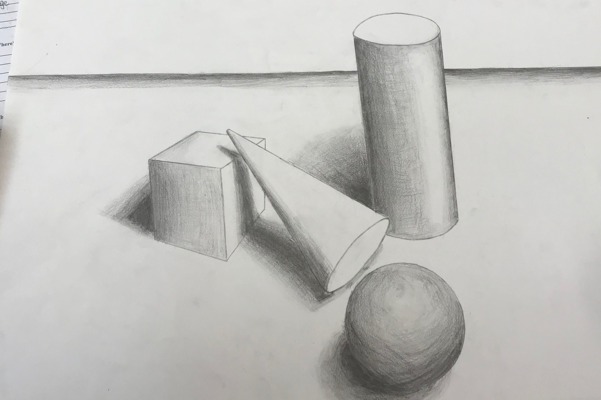
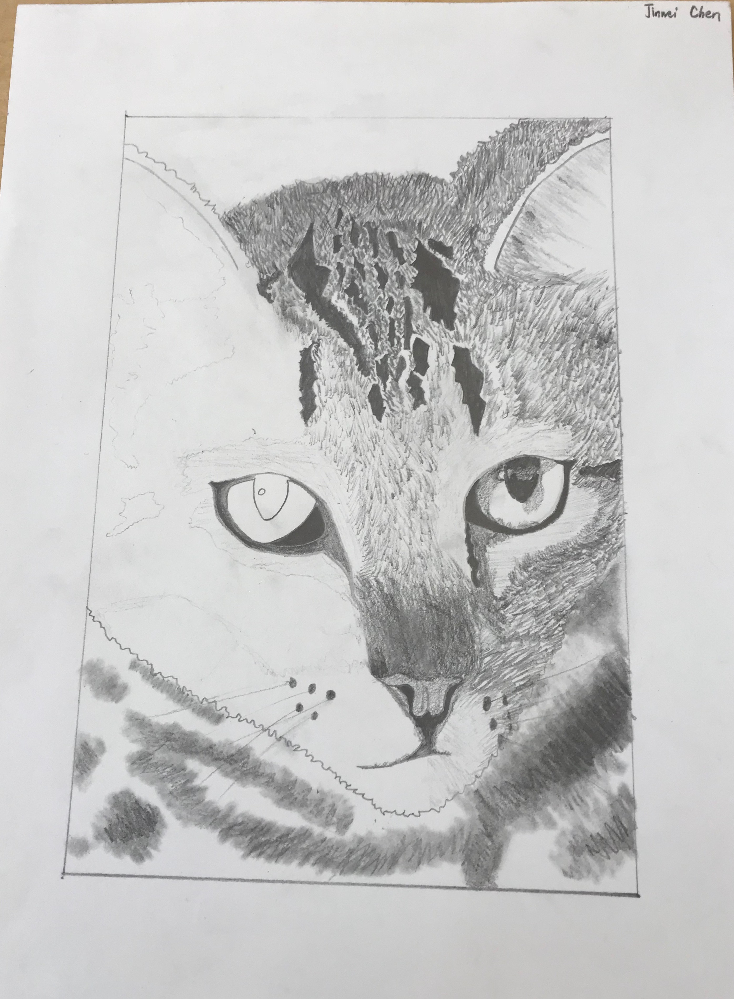
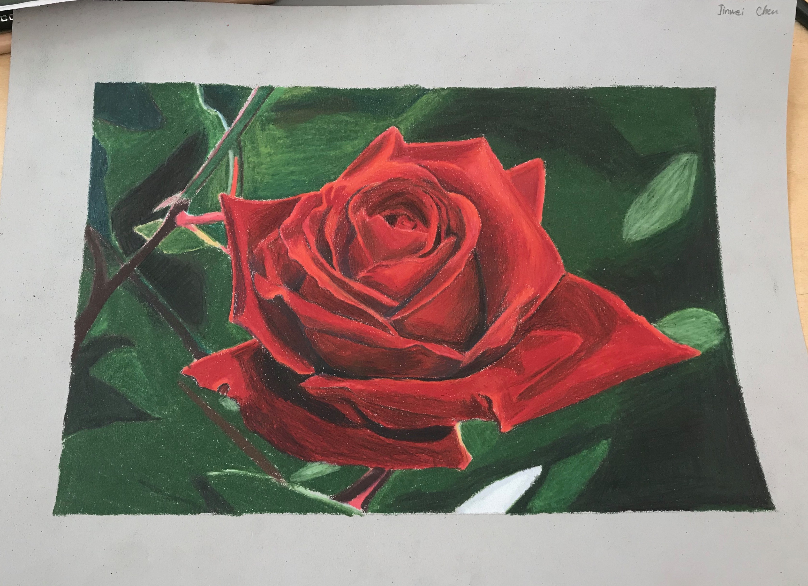
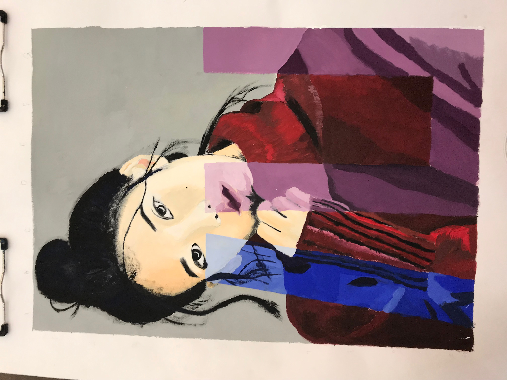
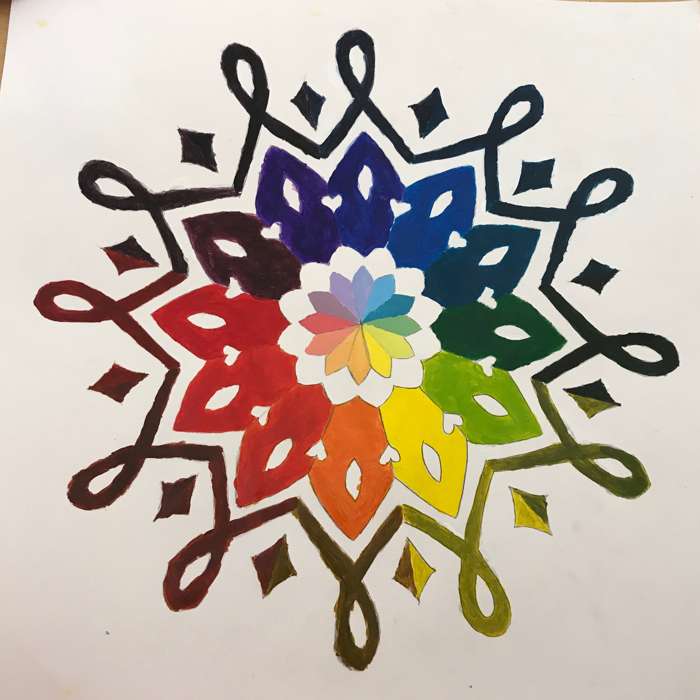
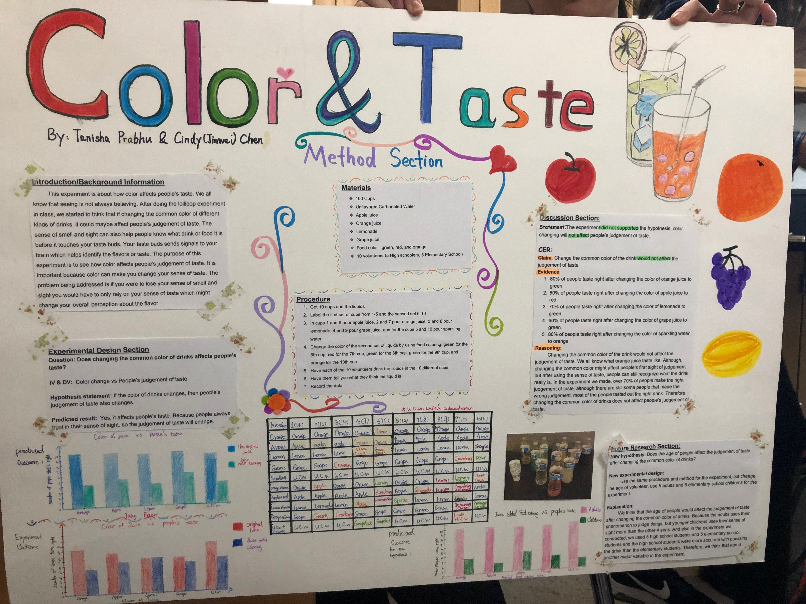
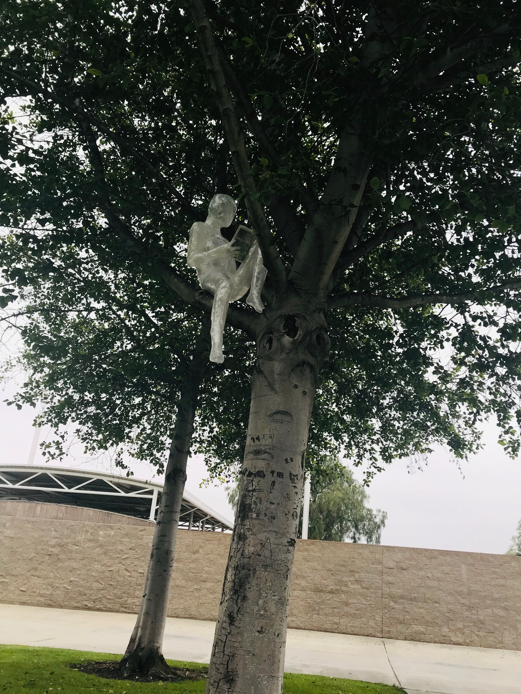
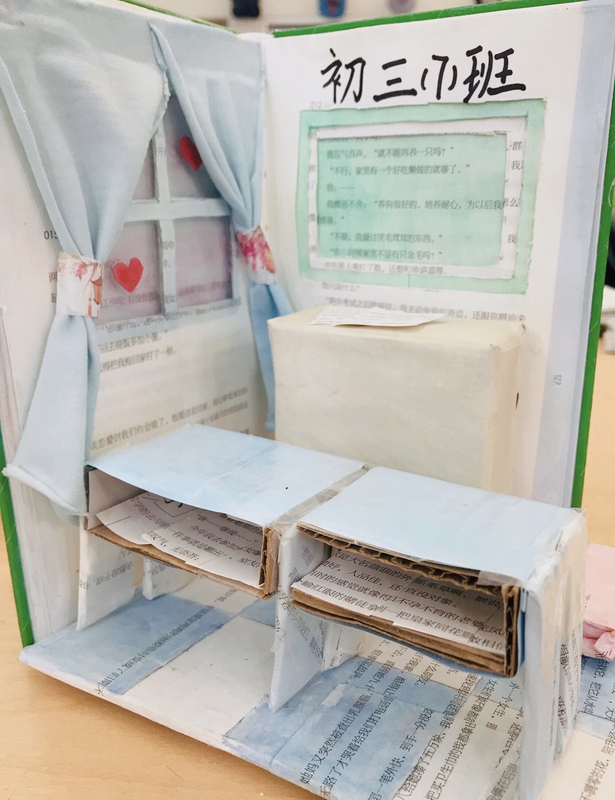

Other Projests
1. Geometric Forms(Sep 25th,2018)
Class:Drawing & Painting1-2

2. Animal (Oct 9th,2018)
Class:Drawing & Painting1-2

3. Color Pencil project (Dec 12th,2018)
Class:Drawing & Painting1-2

4. IU (Jan 14th,2019)
Class:Drawing & Painting1-2

5. Color Palette Design (Feb 13th,2019)
Class:Design and Mixed Media1-2

6. Color & Taste (Feb 14th,2019)
Class:Biology1-2

7. Sculpture(May 1st,2019)
Class:Design and Mixed Media1-2

8. Altered book(May 23rd,2019)
Class:Design and Mixed Media1-2
